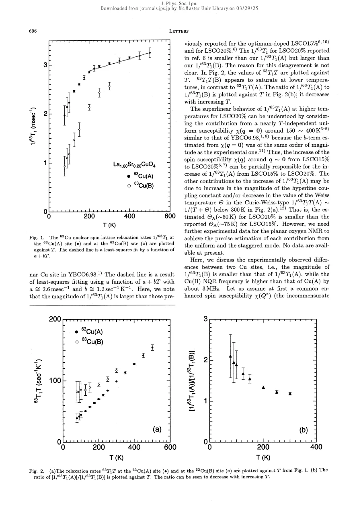

experiment · Itoh · supplied source 1996
Cu Nuclear Spin-Lattice Relaxation Study of A- and B-Sites in La1.80Sr0.20CuO4 (Tc = 30 K)
At x = 0.20 the A and B Cu environments have different rates, but coupling changes and locally different susceptibilities remain competing explanations.
The question: Do the A and B NQR environments share the same local spin dynamics?
Before you start: the few terms you need
- LSCO: layered La2-xSrxCuO4; nominal x is Sr per formula unit
- Local probe: a distribution can matter even when the bulk average barely changes
See → explain → test
Understand it in four pictures.
Picture 1 / 4
One sample, two environments
Look for: Both A and B resonances belong to the x = 0.20 sample.
Swipe across the picture to read every label, or enlarge it below.
- A: 36.6 MHz
- B: 39.2 MHz
Teaching schematic. Labels are measured 63Cu frequencies; isotope overlap remains in the actual spectrum.
Local environments can differ within one nominal composition.
Check the original: PDF p. 1
Picture 2 / 4
Compare rates
Look for: The A-site rate is about 1.2 to 2.1 times the B-site rate.
Swipe across the picture to read every label, or enlarge it below.
- A environment
- B environment
Teaching schematic. A rate ratio does not by itself distinguish coupling from susceptibility.
A frequency difference is accompanied by a magnetic relaxation difference.
Picture 3 / 4
Remove overlap bias
Look for: At lower temperatures isotope and line tails overlap the selected frequency.
Swipe across the picture to read every label, or enlarge it below.
- Excite frequency
- Overlapping components
- Assigned A/B recovery
Teaching schematic. Different isotope gyromagnetic factors help identify magnetic relaxation.
Multiple recovery components must be assigned before interpreting one fitted time.
Check the original: PDF p. 1
Picture 4 / 4
Two physical explanations
Look for: The same spin response with changed hyperfine coupling differs from changed local spin susceptibility.
Swipe across the picture to read every label, or enlarge it below.
- Changed coupling
- Changed susceptibility
Teaching schematic. These are proposed alternatives; the schematic does not resolve the microscopic structure.
The paper retains both possibilities and asks for further local tests.
Check the original: PDF p. 3
Predict before revealing
If A and B rates differ, is a different local hole number the only explanation?
Choose an answer, then compare the reasoning.
Nuclear relaxation weights the electronic susceptibility by the coupling squared. The source compares changed coupling and changed susceptibility explicitly.
Read the answer
No; a changed hyperfine filter can also change the rate Nuclear relaxation weights the electronic susceptibility by the coupling squared. The source compares changed coupling and changed susceptibility explicitly.
Go deeper Follow the full argument
An experiment within a single overdoped composition
Itoh and collaborators compare the A and B Cu NQR environments in La1.80Sr0.20CuO4 with Tc about 30 K. A-site measurements extend from 77.3 to 500 K and B-site measurements from 77.3 to 300 K, above Tc throughout. The polycrystalline sample is checked for a single x-ray phase. NQR is performed at zero applied field, so the frequency differences primarily distinguish local electric quadrupole environments. The reported A and B 63Cu frequencies are 36.6 and 39.2 MHz. This is not a comparison of two macroscopically different samples; the question is why nuclei in different environments of the same crystal chemistry have different magnetic relaxation.
Why recovery curves require care
At sufficiently high temperature the selected A or B recovery follows the expected single exponential for the NQR transition. At lower temperature, overlap creates extra components: the A frequency can include 65Cu B nuclei, and the B frequency can receive a tail of the broadened A line. The authors identify the corresponding long or short recovery components and use their isotope scaling to check a magnetic relaxation mechanism. The A isotope ratio supports magnetic hyperfine relaxation rather than a purely electric quadrupolar process. This means a multiexponential recovery must not automatically be interpreted as intrinsic electronic phase separation; spectral overlap is a concrete instrumental and assignment issue.
Measured differences and temperature dependence
The A rate is between roughly 1.2 and 2.1 times the B rate over the explored interval, and the ratio falls as temperature rises. A-site 1/T1 above about 300 K increases superlinearly, summarized by a + bT. At lower temperatures B-site T1T tends toward saturation more clearly than A-site T1T. Some earlier rates for the same nominal composition lie between the new A and B results, with the source stating that the reason for that discrepancy is unclear. The data therefore show environment-dependent dynamics, but differences between experiments also make frequency selection and recovery fitting an essential part of comparing published numbers.
A shared susceptibility with different couplings
One explanation assumes the A and B sites share a common enhanced susceptibility near the incommensurate antiferromagnetic wave vector. A change in the apical-oxygen environment then changes the charge transfer and the on-site and transferred hyperfine couplings. Within a long-correlation-length expansion, the observed rate ratio constrains combinations such as Aab - 4B and the transferred coupling B. The source finds a reduced transferred coupling at the B site compatible with the ratio and its temperature dependence. This route illustrates a general warning: different nuclear rates can arise from different filters on the same electronic spectrum, so a rate contrast is not by itself a quantitative local-hole contrast.
A locally different susceptibility remains possible
An alternative holds the hyperfine filter approximately common while letting the local antiferromagnetic susceptibilities differ. The estimated Weiss scale is larger at B than A, consistent with weaker local correlations in a hole-richer environment. In that interpretation Sr can act as a pinning or modulation center for a nonuniform charge distribution. The authors explicitly keep these viewpoints open and call for additional oxygen NMR information to separate uniform and staggered contributions. Their conclusion establishes unequal A/B magnitude and temperature dependence, not a unique charge structure. Later frequency-resolved studies are valuable because they constrain how electronic distributions correlate across charge-sensitive and spin-sensitive channels.
How to compare the evidence
The A/B comparison is especially instructive because both signals come from the same nominal x = 0.20 specimen. A difference between their rates cannot be explained simply by assigning the whole sample a different bulk doping. Yet it also does not automatically establish two different local susceptibilities: magnetic relaxation contains the square of the hyperfine coupling, so a changed coupling can amplify the same electronic fluctuations. The source weighs this alternative against the local-environment interpretation. Spectral overlap adds a second experimental complication, because selective excitation may admit nuclei from the neighboring isotope or line tail. The meaningful conclusion is a reproducible environment-dependent relaxation contrast with unresolved microscopic partition between coupling and electronic response, rather than a uniquely measured two-phase charge distribution.
Translate the mathematics Key equations and symbol meanings
Aα(q) = Aα + 2B[cos(qx a) + cos(qy a)]
Symbols: Aα: anisotropic on-site coupling; B: transferred nearest-neighbor coupling; a: Cu spacing; q: wave vector.
The rate can change because its hyperfine weighting changes, even with the same electronic susceptibility.
r = [1/T1(A)]/[1/T1(B)]
Symbols: r: measured ratio between selected A and B relaxation rates.
The source models its magnitude and temperature variation under alternative coupling and susceptibility assumptions.
Read the evidence A guided look at the original figures

Open the full original page ↗
Open the full original page ↗
What this paper does—and does not—establish
- Four-page supplied scan read visually.
- The microscopic A/B distinction is not uniquely resolved.
- The reported temperature ranges lie above Tc; no new superconducting-state claim is made.
Explain it back.
Try answering aloud before opening the explanation.
Are these different nominal dopings?
No. A and B are selected local environments in x = 0.20.
Why are low-temperature recovery components ambiguous?
Isotope peaks and line tails overlap the selected frequencies.
What does isotope scaling support?
A magnetic hyperfine relaxation channel for the assigned components.
Connect the next paper.
Source version, reading coverage and preservation
Complete scanned source read visually at full page size, including main equations and figures
Reviewed body pages: 1, 2, 3, 4. References checked as a bibliography but cited works were not independently re-read.
Original file retained byte for byte. SHA-256: 286392e3c43a1c4c7465fe44913c31ecce409ce771a81cee300ee55a35096b3d
Filename: JPSJ - Itoh - A-site and B-site Cu relaxation in LSCO0.20 - 1996.pdf.